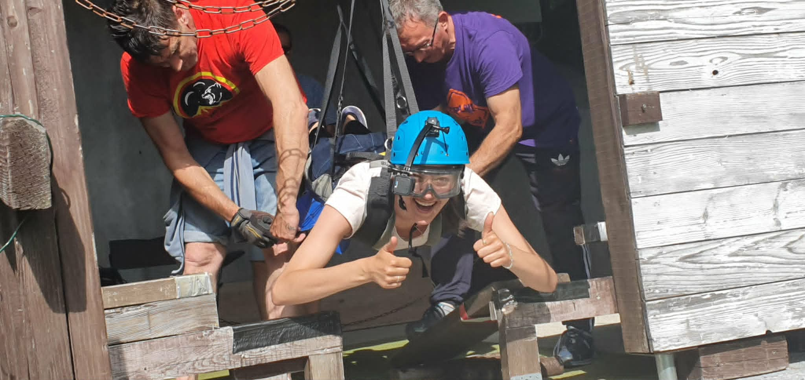
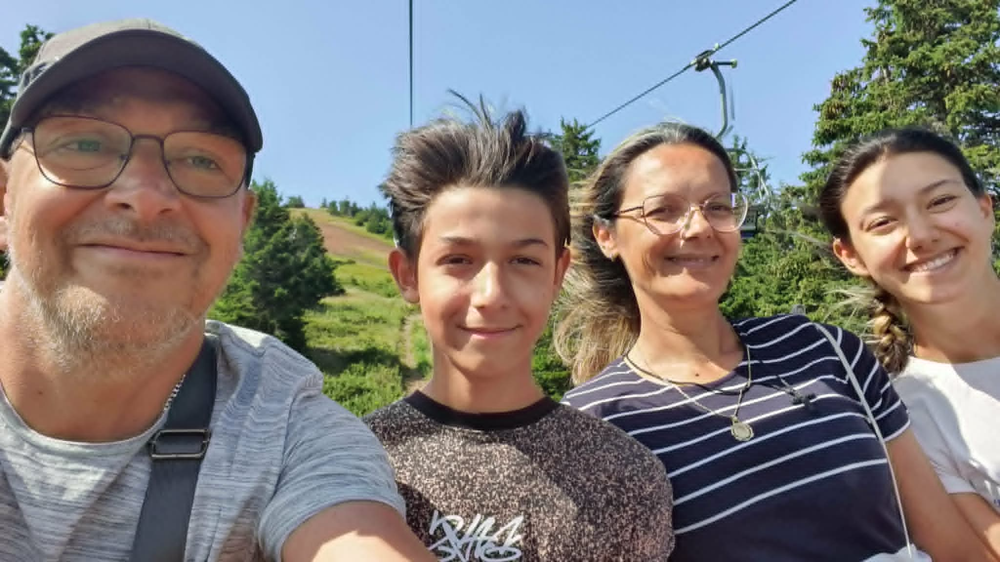
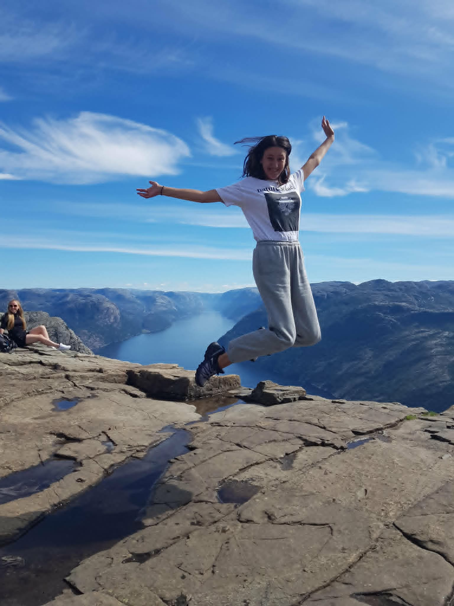
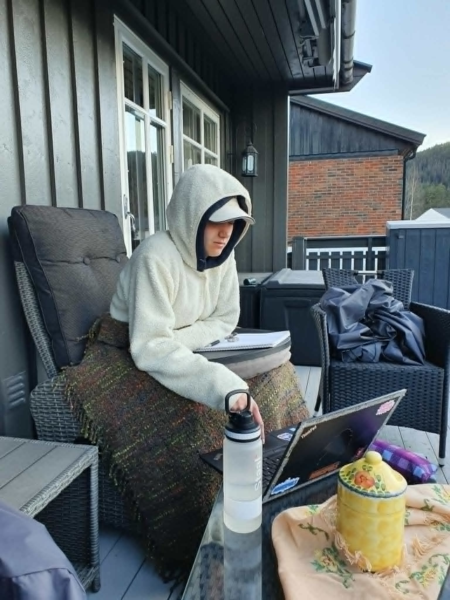

My favorite food is Пуњене Паприке (Filled Bell Peppers), a dish from Serbia, my parent's home country.

Back in Norway, I dance for the Serbian Folkdance group "RAS".
Here is a link to a preformance from May 2025 (Bærum, Norway).
Click me to watch!

My family and I normally go down to Serbia for visiting my distant family, but one summer we went by Vrhovine, Croatia for ziplining! I was the only one who went through with the activity, since it was blowing a lot that day.

One of my favorite photos of my family and I, as we take 'to the skies' on a chairlift in one of the mountains between Serbia and Montenegro.

I really enjoy hiking, and one my family and I went to was 'Preikestolen' in Norway, which is a very famous hiking spot. It was a 3 hour hike, and the view was really breathtaking!

This is how I spend my days on my family's home terrace, when I'm back in Norway. I love to read and listen to music while enjoying the sun and fresh air, even in the eventual cold weathers that Norway has.
One of my favorite website are 👉PointerPointer👈
These are my projects from SNU Spring Semester 2026!